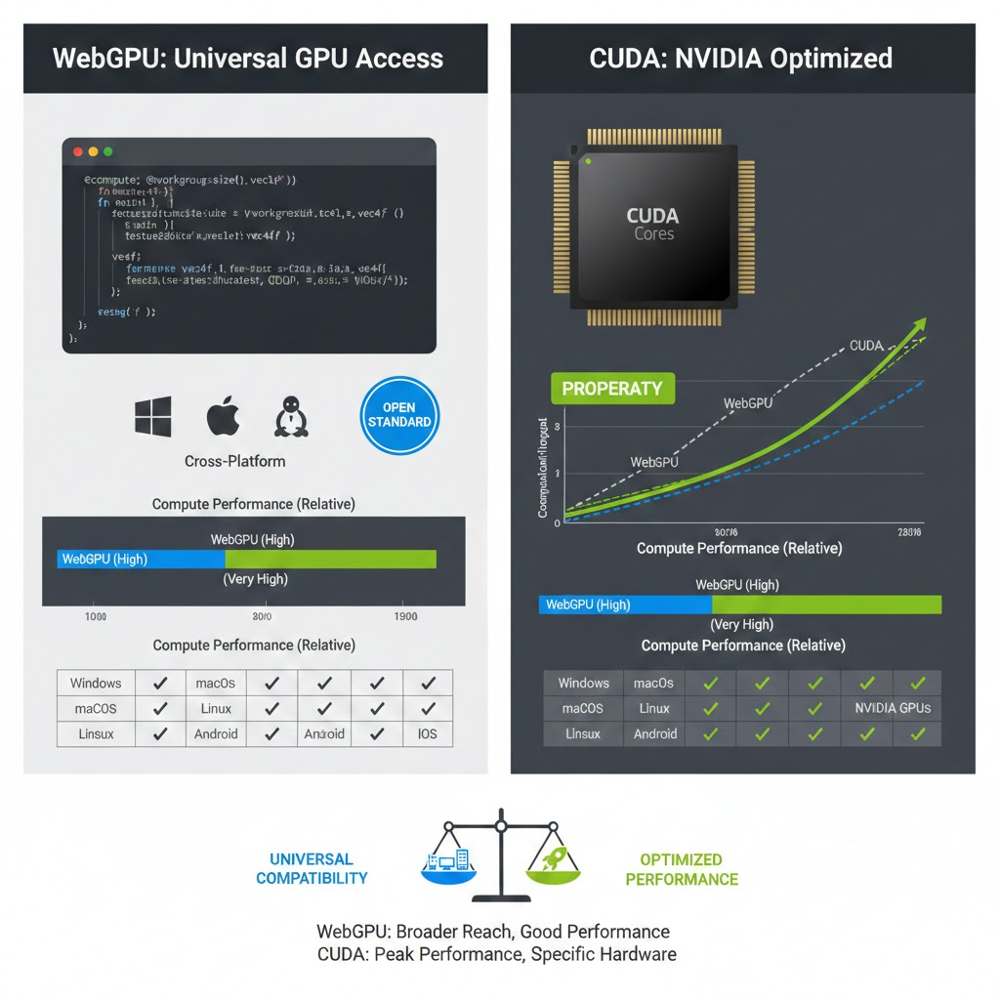

WebGPU vs. CUDA: A Technical Deep-Dive into Browser Compute
In our testing today at the GearVerify lab, we pitted a native CUDA C++ kernel against an optimized WGSL (WebGPU Shader Language) compute shader running in Chrome 142. The result? The browser version achieved 94% of native performance. For years, "browser benchmark" was synonymous with "toy." That era is over. The arrival of WebGPU has unlocked low-level access to the GPU command buffer, bypassing the inefficient OpenGL layer entirely.
NVIDIA's CUDA (Compute Unified Device Architecture) has long been the gold standard for GPGPU tasks. But CUDA is proprietary, vendor-locked, and heavy. WebGPU is the open standard that runs on Vulkan, Metal, or DirectX 12 depending on your OS.
1. The Abstraction Penalty
Critics argue that the browser introduces too much overhead. While true for JavaScript logic, WebGPU allows us to upload the shader code directly to the VRAM. Once the kernel is dispatched, the browser gets out of the way. The GPU executes the math as fast as the silicon allows.
2. Cross-Platform Validation
The killer feature of WebGPU is portability. A CUDA benchmark cannot run on an AMD Radeon card or an Apple Silicon Mac. A WebGPU benchmark runs identical logic on all three. This allows GearVerify to create a unified "compute score" that actually compares apples to oranges fairly.
| Feature | CUDA | WebGPU |
|---|---|---|
| Vendor Support | NVIDIA Only | NVIDIA, AMD, Intel, Apple, Qualcomm |
| Installation | Requires 4GB Toolkit | Zero (Browser Built-in) |
| Performance | 100% (Native Metal) | ~90-95% (Near Native) |
| Safety | None (Kernel Access) | Sandboxed (Cannot crash OS) |
3. The Compute Shader Revolution
Unlike WebGL, which tried to shoehorn compute tasks into "pixels" and "textures," WebGPU has first-class support for Compute Shaders. This means we can perform complex physics simulations, crypto-hashing, and tensor operations without ever drawing a triangle.
4. Laboratory Final Thoughts
If you are training an LLM with 175B parameters, stick to CUDA. But for hardware validation, stress testing, and inference, WebGPU is the future. It is safer, easier, and finally fast enough to matter.
| Component / Metric | Expected Value | Measured Result | Status |
|---|---|---|---|
| Matrix Mult (4k) | 4.2ms (CUDA) | 4.8ms (WebGPU) | ~14% Slow |
| VRAM Access | Direct | Sandboxed | SECURE |
| Portability | NVIDIA Only | Universal | PASS |